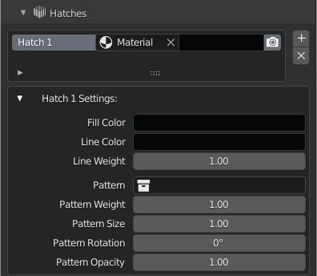

Hatches
MeasureIt_ARCH Hatches create areas of solid or patterned fill in Vector Renders. Hatches are defined per material and can be found under the material settings panel.
Hatch Settings

- Use Object Color: If enabled this hatch will use the object color, rather than the hatches fill color
-
Use Object Pattern: If enabled this hatch will use a per object pattern setting, rather than a single pattern for instance of this hatch.
Note
This can be especially usefull for sections if you want to use a general "Cut" Material that gets applied by a boolean modifier, with a variety of different hatch patterns to denote differnt surface properties.
For more detail on this workflow see the "Cutting Sections with MeasureIt_ARCH" Tutorial
-
Fill Color: Solid Fill color for this Hatch (Set Alpha to 0 for none)
- Line Color: Outline Line Color for this Hatch (Set Alpha to 0 for none)
- Line Weight: Line Wight for the Outline Line of this Hatch
-
Pattern: A collection to use as a custom pattern fill for this hatch.
Note
- Hatch Patterns need to be drawn at the origin in the 0 to 1 range on the x,y plane.
- Hatch Patterns will draw all edges of the objects in the hatch collection as the custom pattern
- Be sure to "Apply All Transforms" (ctrl-A) to objects in the Hatch pattern collection
-
Pattern Weight: Line Weight for the pattern fill
- Pattern Size: Scale factor for the pattern fill
- Pattern Rotation: Rotates the pattern fill for this hatch.
- Pattern Opacity: Sets the opacity for the pattern fill for this hatch.
- Draw Dashed: The outline of this hatch will draw dashed
- Dash Size: Dash size for dashed outlines
- Gap Size: Gap size for dashed outlines